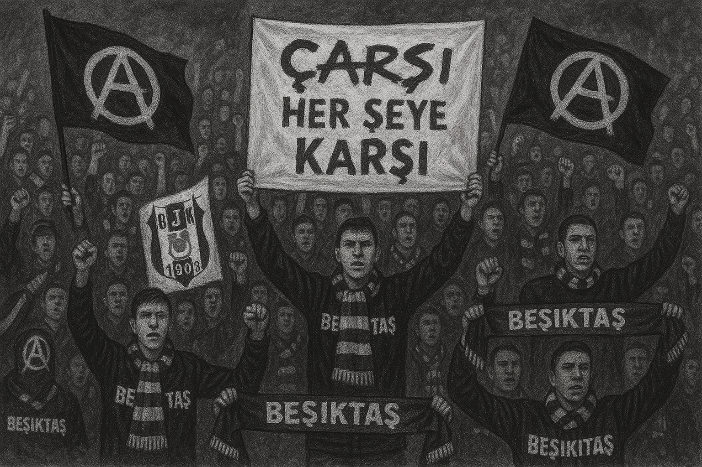

Beşiktaş Jimnastik Kulübü was officially founded in 1903, making it the oldest sports club in Turkey. While it started as a gymnastics club, it quickly grew to become one of the most iconic football institutions in the country.
Early Success and Growth
The club became one of the founding teams of the Turkish National League and has remained a dominant force ever since. Known for its strong defense and never-give-up mentality, Beşiktaş has collected numerous domestic trophies.
Fan Culture
Çarşi: The Soul of Beşiktaş
Beşiktaş fans are known for their loyalty, humor, and rebellion. The ultra group Çarşı is one of the most famous supporter groups in the world, known not just for their chants, but also for their political and social activism.
Anti-authoritarian attitude
Creative banners and chants
Community organizing & charity events

AI-generated illustration of Beşiktaş's Çarşi fan group.
Vodafone Park
Beşiktaş plays its home matches at Vodafone Park, a modern stadium built on the site of the historic İnönü Stadium, overlooking the Bosphorus. It's widely considered one of the most beautiful stadiums in the world.